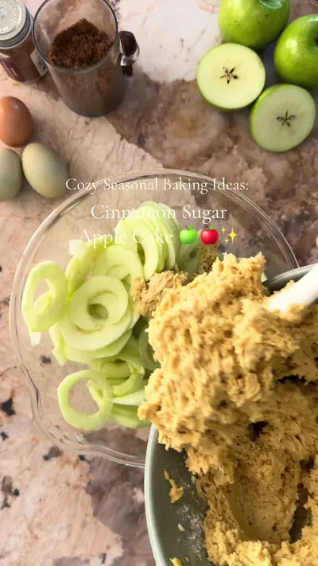

Peel the apples, core them, and cut them into thin slices

Ingredients
- 5 apples (I like tart varieties)
- 3 eggs
- 120 g sugar (about ½ cup + 1 tbsp)
- 1 tsp cinnamon & 1 teaspoon vanilla
- 150 g soft butter (about ⅔ cup / 10 tbsp)
- 150 g yogurt (about ⅔ cup)
- 20 ml olive oil (about 4 tsp)
- 280 g flour (about 2¼ cups)
- 10 g baking powder (about 2 tsp)
- 2 tbsp sugar
- 1 tsp cinnamon
- 30 g sliced almonds (about ⅓ cup)
Steps
- Peel the apples, core them, and cut them into thin slices.
- For the batter, put the eggs, sugar, cinnamon, soft butter, and yogurt in a bowl and stir briefly until combined.
- Add the canola oil, flour, and baking powder, and beat with a hand mixer until the batter is smooth and creamy.
- Gently fold in the apple slices so they are evenly distributed through the batter.
- Pour the batter into a round baking pan and smooth the top.
- For the topping, mix the sugar and cinnamon and sprinkle it over the cake. Finish by scattering the sliced almonds on top.
- Bake in a preheated oven at 180 °C (350 °F), conventional top-and-bottom heat, for about 40–45 minutes, until golden brown.
Recipe text as written by @mountain_mothering on TikTok. Open original